Codex RPG · Atlas de Ícones
Primeira biblioteca vetorial. Contornos de armas, armaduras, magias e elementos; títulos de constelações; indicadores de ficha. DE é uma fusão de ᛋ, ᚨ e ᚦ, desenhada exclusivamente no azul Ansuz #2369BB.
ARMAS (10)
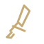
arma adaga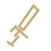
arma espada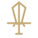
arma montantearma machado
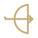
arma arco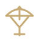
arma besta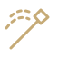
arma arremesso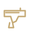
arma pistolaarma punhos
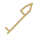
arma lancaARMADURAS E ESCUDOS (6)
armadura muito leve
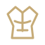
armadura leve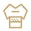
armadura media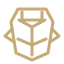
armadura pesadaarmadura escudo
armadura escudo arcano
ELEMENTOS (8)
elemento fogo
elemento agua
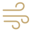
elemento arelemento terra
elemento sagrado
elemento sangue
elemento trevas
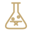
elemento venenoCONJURAÇÃO (3)
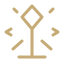
magia focomagia circulo
magia transformacao
CONSTELAÇÕES DO CODEX (13)
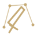
categoria armascategoria corporal
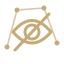
categoria furtividadecategoria conjuracao
categoria elementos
categoria natureza
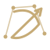
categoria disparoscategoria alquimia
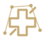
categoria recuperacaocategoria conhecimentos avancados
categoria praticas avancadas
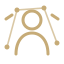
categoria influencia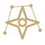
categoria outrosINDICADORES (4)
 status vida
status vida status integridade
status integridade status antecipar
status anteciparstatus de